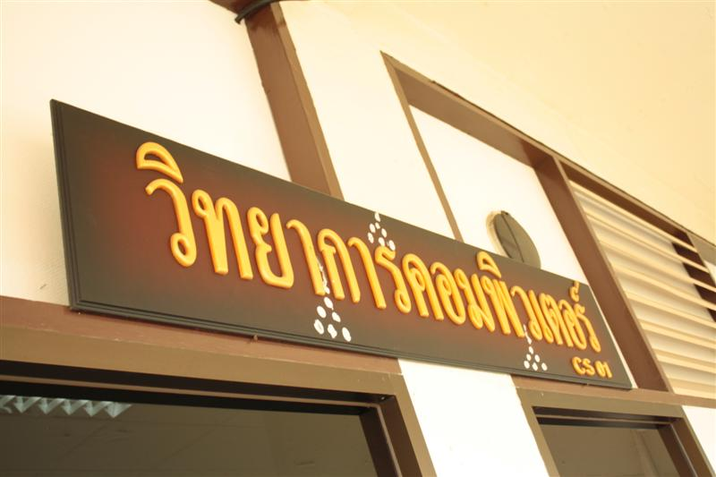
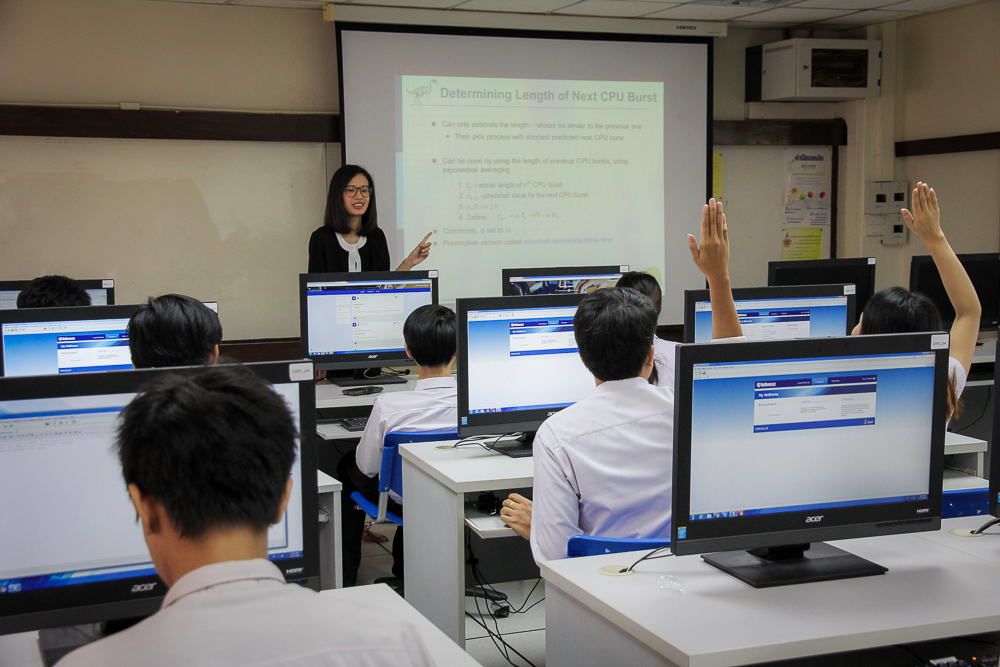

Department of Computer Science

The Department of Computer Science was established in 2005,
is one of 11 departments in Faculty of Science and Technology,
Rajamangala University of Technology Krungthep. The department offers the B.Sc.
Computer Science program and 8 full time lecturers, about 35 undergraduate students.

In 2013 the department launch the B.Sc. Information Technology program, about 25 undergraduate students.
In 2016, we have 11 full time lecturers and about 300 undergraduate students in 2 programs.